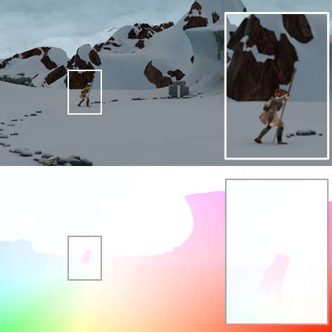
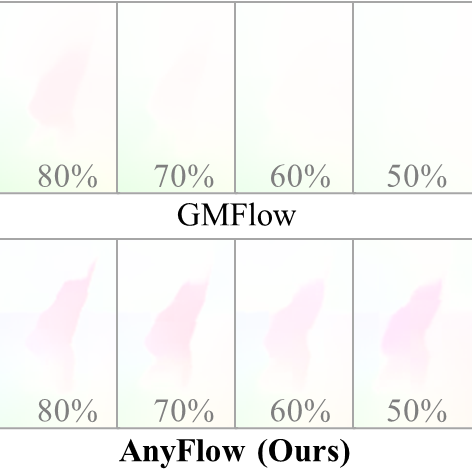
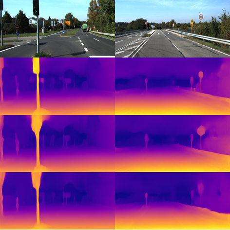
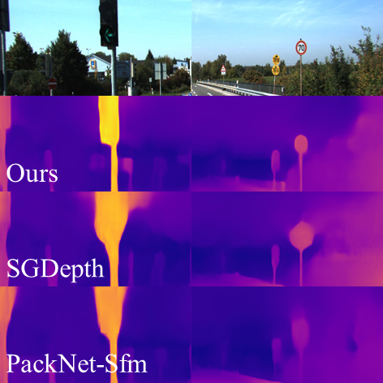

AssetGen: Deployable 3D Asset Generation at Interactive Speed
Image-to-3D generation of textured meshes in 30 seconds, with baked normals and a controlled polygon budget for real-time rendering.
I am a computer vision researcher at Meta Reality Labs. My research spans 3D computer vision and graphics, including visual perception, neural rendering, and generative 3D modeling. My recent work focuses on developing generative models for 3D assets and interactive worlds, from research and large-scale training to production deployment for mixed reality applications.
I received my Ph.D. in Computer Science and Engineering from Seoul National University, where I was advised by Sungjoo Yoo. During my doctoral studies, I completed two research internships at Meta in 2022 and 2023.
Image-to-3D generation of textured meshes in 30 seconds, with baked normals and a controlled polygon budget for real-time rendering.
Text-to-3D generation of textured, traversable environments with interactive objects, designed for use in standard game engines.
Autoregressive generation of part-based 3D objects from images, part masks, or existing 3D objects, with the type and number of parts inferred automatically.
Joint stylization of 3D scene geometry and appearance, guided by a reference RGB image and depth map.


Optical flow estimation at arbitrary output resolutions using an implicit neural representation, including from low-resolution inputs.


Semantics-guided depth estimation that improves object boundaries through metric learning and cross-attention.
Nov 2024 — Present · Burlingame, CA
3D Generative AI Research
Jan — Jun 2024 · Seoul, South Korea
Jun — Dec 2023 · Sunnyvale, CA
Jun — Dec 2022 · Seattle, WA
Mar 2013 — Aug 2019